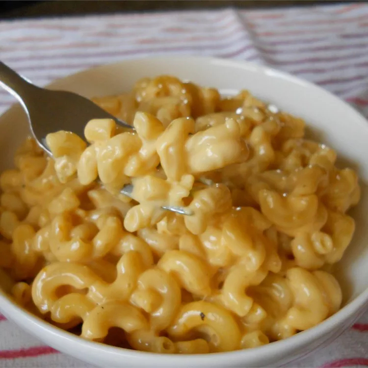

Mac 'n Cheese

Description
I have tried many more-complicated recipes for macaroni and cheese. Not only is this one often requested for family functions, but it is easy to make! Kids LOVE this recipe. It is so handy for busy moms.
Ingredients
- 4 ounces elbow macaroni
- 4 ounces cubed processed cheese food
- 2 fluid ounces milk
- ¼ teaspoon ground black pepper
Steps
- Bring a large pot of lightly salted water to a boil. Add pasta and cook until al dente, 8 to 10 minutes; drain.
- Place a saucepan over medium-low heat. Combine the cheese food, milk, and pepper in the saucepan; cook until the cheese has melted, stirring frequently. Stir in the drained macaroni until evenly coated.
Source: Easiest Mac-N-Cheese Ever! Recipe